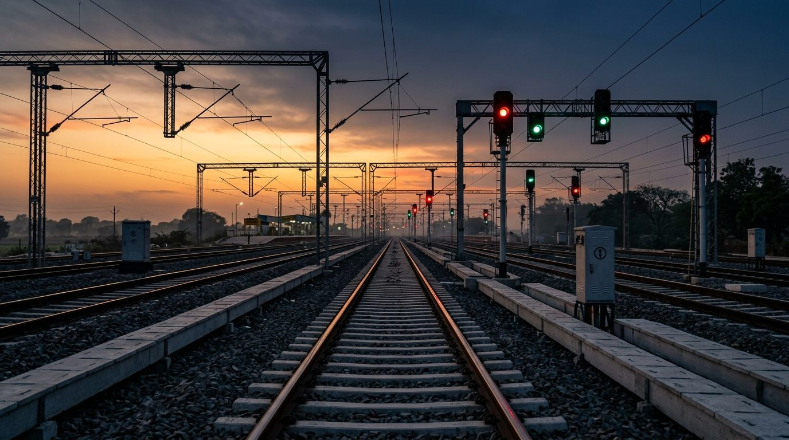

LANDMARK CORRIDORAutomatic Block Signalling (ABS) Corridor Engineering
Complete turnkey design, circuit diagrams, application logic, and technical assurance delivered for dense mainline automatic block sections. Replaced absolute block working with 4-aspect automatic signalling, increasing line capacity by 28%.
85+ RKMDouble Line Track
+ 28%Headway Gain
100%CRS Approval
Multi-OEMInterlocking Logic
Request Case Study →
Independent Safety Assessment (ISA) Verified